Inverse Trigonometric Functions
For any right triangle, given one other angle and the length of one side, we can figure out what the other angles and sides are. But what if we are given only two sides of a right triangle? We need a procedure that leads us from a ratio of sides to an angle. This is where the notion of an inverse to a trigonometric function comes into play. In this section, we will explore the inverse trigonometric functions.
Understanding and Using the Inverse Sine, Cosine, and Tangent Functions
In order to use inverse trigonometric functions, we need to understand that an inverse trigonometric function “undoes” what the original trigonometric function “does,” as is the case with any other function and its inverse. In other words, the domain of the inverse function is the range of the original function, and vice versa, as summarized in Figure 1.

For example, if then we would write Be aware that does not mean The following examples illustrate the inverse trigonometric functions:
- Since then
- Since then
- Since then
In previous sections, we evaluated the trigonometric functions at various angles, but at times we need to know what angle would yield a specific sine, cosine, or tangent value. For this, we need inverse functions. Recall that, for a one-to-one function, if then an inverse function would satisfy
Bear in mind that the sine, cosine, and tangent functions are not one-to-one functions. The graph of each function would fail the horizontal line test. In fact, no periodic function can be one-to-one because each output in its range corresponds to at least one input in every period, and there are an infinite number of periods. As with other functions that are not one-to-one, we will need to restrict the domain of each function to yield a new function that is one-to-one. We choose a domain for each function that includes the number 0. Figure 2 shows the graph of the sine function limited to and the graph of the cosine function limited to

Figure 3 shows the graph of the tangent function limited to
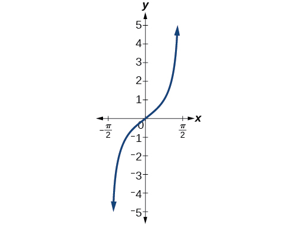
These conventional choices for the restricted domain are somewhat arbitrary, but they have important, helpful characteristics. Each domain includes the origin and some positive values, and most importantly, each results in a one-to-one function that is invertible. The conventional choice for the restricted domain of the tangent function also has the useful property that it extends from one vertical asymptote to the next instead of being divided into two parts by an asymptote.
On these restricted domains, we can define the inverse trigonometric functions.
- The inverse sine function means The inverse sine function is sometimes called the arcsine function, and notated
- The inverse cosine function means The inverse cosine function is sometimes called the arccosine function, and notated
- The inverse tangent function means The inverse tangent function is sometimes called the arctangent function, and notated
The graphs of the inverse functions are shown in Figure 4, Figure 5, and Figure 6. Notice that the output of each of these inverse functions is a number, an angle in radian measure. We see that has domain and range has domain and range and has domain of all real numbers and range To find the domain and range of inverse trigonometric functions, switch the domain and range of the original functions. Each graph of the inverse trigonometric function is a reflection of the graph of the original function about the line

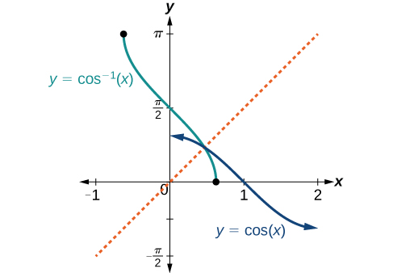
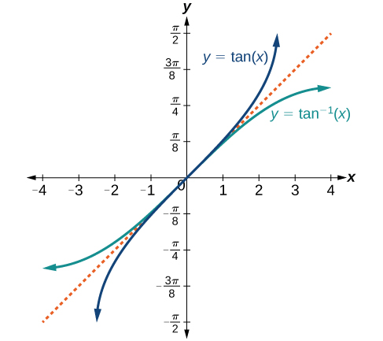
Writing a Relation for an Inverse Function
Given write a relation involving the inverse sine.
Solution
Use the relation for the inverse sine. If then .
In this problem, and
Finding the Exact Value of Expressions Involving the Inverse Sine, Cosine, and Tangent Functions
Now that we can identify inverse functions, we will learn to evaluate them. For most values in their domains, we must evaluate the inverse trigonometric functions by using a calculator, interpolating from a table, or using some other numerical technique. Just as we did with the original trigonometric functions, we can give exact values for the inverse functions when we are using the special angles, specifically (30°), (45°), and (60°), and their reflections into other quadrants.
Evaluating Inverse Trigonometric Functions for Special Input Values
Evaluate each of the following.
- ⓐ
- ⓑ
- ⓒ
- ⓓ
Solution
- ⓐ Evaluating is the same as determining the angle that would have a sine value of In other words, what angle would satisfy There are multiple values that would satisfy this relationship, such as and but we know we need the angle in the interval so the answer will be Remember that the inverse is a function, so for each input, we will get exactly one output.
- ⓑ To evaluate we know that and both have a sine value of but neither is in the interval For that, we need the negative angle coterminal with
- ⓒTo evaluate we are looking for an angle in the interval with a cosine value of The angle that satisfies this is
- ⓓ Evaluating we are looking for an angle in the interval with a tangent value of 1. The correct angle is
Using a Calculator to Evaluate Inverse Trigonometric Functions
To evaluate inverse trigonometric functions that do not involve the special angles discussed previously, we will need to use a calculator or other type of technology. Most scientific calculators and calculator-emulating applications have specific keys or buttons for the inverse sine, cosine, and tangent functions. These may be labeled, for example, SIN , ARCSIN, or ASIN.
In the previous chapter, we worked with trigonometry on a right triangle to solve for the sides of a triangle given one side and an additional angle. Using the inverse trigonometric functions, we can solve for the angles of a right triangle given two sides, and we can use a calculator to find the values to several decimal places.
In these examples and exercises, the answers will be interpreted as angles and we will use as the independent variable. The value displayed on the calculator may be in degrees or radians, so be sure to set the mode appropriate to the application.
Evaluating the Inverse Sine on a Calculator
Evaluate using a calculator.
Solution
Because the output of the inverse function is an angle, the calculator will give us a degree value if in degree mode and a radian value if in radian mode. Calculators also use the same domain restrictions on the angles as we are using.
In radian mode, In degree mode, Note that in calculus and beyond we will use radians in almost all cases.
Applying the Inverse Cosine to a Right Triangle
Solve the triangle in Figure 8 for the angle
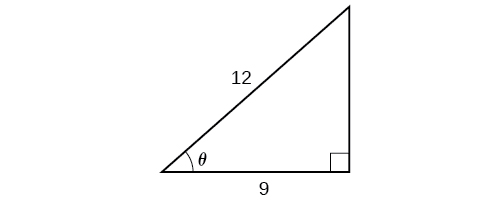
Solution
Because we know the hypotenuse and the side adjacent to the angle, it makes sense for us to use the cosine function.
Finding Exact Values of Composite Functions with Inverse Trigonometric Functions
There are times when we need to compose a trigonometric function with an inverse trigonometric function. In these cases, we can usually find exact values for the resulting expressions without resorting to a calculator. Even when the input to the composite function is a variable or an expression, we can often find an expression for the output. To help sort out different cases, let and be two different trigonometric functions belonging to the set and let and be their inverses.
Evaluating Compositions of the Form f(f−1(y)) and f−1(f(x))
For any trigonometric function, for all in the proper domain for the given function. This follows from the definition of the inverse and from the fact that the range of was defined to be identical to the domain of However, we have to be a little more careful with expressions of the form
Using Inverse Trigonometric Functions
Evaluate the following:
- ⓐ
- ⓑ
- ⓒ
- ⓓ
Solution
- ⓐ so
- ⓑ but so
- ⓒ so
- ⓓ but because cosine is an even function. so
Evaluating Compositions of the Form f−1(g(x))
Now that we can compose a trigonometric function with its inverse, we can explore how to evaluate a composition of a trigonometric function and the inverse of another trigonometric function. We will begin with compositions of the form For special values of we can exactly evaluate the inner function and then the outer, inverse function. However, we can find a more general approach by considering the relation between the two acute angles of a right triangle where one is making the other Consider the sine and cosine of each angle of the right triangle in Figure 10.
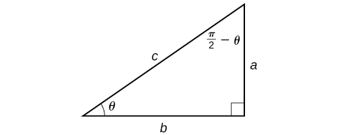
Because we have if If is not in this domain, then we need to find another angle that has the same cosine as and does belong to the restricted domain; we then subtract this angle from Similarly, so if These are just the function-cofunction relationships presented in another way.
Evaluating the Composition of an Inverse Sine with a Cosine
Evaluate
- ⓐby direct evaluation.
- ⓑ by the method described previously.
Solution
- ⓐ Here, we can directly evaluate the inside of the composition.
Now, we can evaluate the inverse function as we did earlier.
- ⓑ We have and
Evaluating Compositions of the Form f(g−1(x))
To evaluate compositions of the form where and are any two of the functions sine, cosine, or tangent and is any input in the domain of we have exact formulas, such as When we need to use them, we can derive these formulas by using the trigonometric relations between the angles and sides of a right triangle, together with the use of Pythagoras’s relation between the lengths of the sides. We can use the Pythagorean identity, to solve for one when given the other. We can also use the inverse trigonometric functions to find compositions involving algebraic expressions.
Evaluating the Composition of a Sine with an Inverse Cosine
Find an exact value for
Solution
Beginning with the inside, we can say there is some angle such that which means and we are looking for We can use the Pythagorean identity to do this.
Since is in quadrant I, must be positive, so the solution is See Figure 11.

We know that the inverse cosine always gives an angle on the interval so we know that the sine of that angle must be positive; therefore
Evaluating the Composition of a Sine with an Inverse Tangent
Find an exact value for
Solution
While we could use a similar technique as in Example 6, we will demonstrate a different technique here. From the inside, we know there is an angle such that We can envision this as the opposite and adjacent sides on a right triangle, as shown in Figure 12.

Using the Pythagorean Theorem, we can find the hypotenuse of this triangle.
Now, we can evaluate the sine of the angle as the opposite side divided by the hypotenuse.
This gives us our desired composition.
Finding the Cosine of the Inverse Sine of an Algebraic Expression
Find a simplified expression for for
Solution
We know there is an angle such that
Because we know that the inverse sine must give an angle on the interval we can deduce that the cosine of that angle must be positive.
Key Concepts
- An inverse function is one that “undoes” another function. The domain of an inverse function is the range of the original function and the range of an inverse function is the domain of the original function.
- Because the trigonometric functions are not one-to-one on their natural domains, inverse trigonometric functions are defined for restricted domains.
- For any trigonometric function if then However, only implies if is in the restricted domain of See Example 1.
- Special angles are the outputs of inverse trigonometric functions for special input values; for example, See Example 2.
- A calculator will return an angle within the restricted domain of the original trigonometric function. See Example 3.
- Inverse functions allow us to find an angle when given two sides of a right triangle. See Example 4.
- In function composition, if the inside function is an inverse trigonometric function, then there are exact expressions; for example, See Example 5.
- If the inside function is a trigonometric function, then the only possible combinations are if and if See Example 6 and Example 7.
- When evaluating the composition of a trigonometric function with an inverse trigonometric function, draw a reference triangle to assist in determining the ratio of sides that represents the output of the trigonometric function. See Example 8.
- When evaluating the composition of a trigonometric function with an inverse trigonometric function, you may use trig identities to assist in determining the ratio of sides. See Example 9.
Section Exercises
Verbal
Why do the functions and have different ranges?
Solution
The function is one-to-one on thus, this interval is the range of the inverse function of The function is one-to-one on thus, this interval is the range of the inverse function of
Since the functions and are inverse functions, why is not equal to
Explain the meaning of
Solution
is the radian measure of an angle between and whose sine is 0.5.
Most calculators do not have a key to evaluate Explain how this can be done using the cosine function or the inverse cosine function.
Why must the domain of the sine function, be restricted to for the inverse sine function to exist?
Solution
In order for any function to have an inverse, the function must be one-to-one and must pass the horizontal line test. The regular sine function is not one-to-one unless its domain is restricted in some way. Mathematicians have agreed to restrict the sine function to the interval so that it is one-to-one and possesses an inverse.
Discuss why this statement is incorrect: for all
Determine whether the following statement is true or false and explain your answer:
Solution
True . The angle, that equals , , will be a second quadrant angle with reference angle, , where equals , . Since is the reference angle for , and = -
Algebraic
For the following exercises, evaluate the expressions.
Solution
Solution
Solution
Solution
For the following exercises, use a calculator to evaluate each expression. Express answers to the nearest hundredth.
Solution
1.98
Solution
0.93
Solution
1.41
For the following exercises, find the angle in the given right triangle. Round answers to the nearest hundredth.
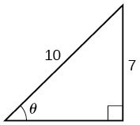

Solution
0.56 radians
For the following exercises, find the exact value, if possible, without a calculator. If it is not possible, explain why.
Solution
0
Solution
0.71
Solution
-0.71
Solution
Solution
0.8
Solution
For the following exercises, find the exact value of the expression in terms of with the help of a reference triangle.
Solution
Solution
Solution
Extensions
For the following exercises, evaluate the expression without using a calculator. Give the exact value.
For the following exercises, find the function if
Solution
Solution
Solution
Graphical
Graph and state the domain and range of the function.
Graph and state the domain and range of the function.
Solution

domain range
Graph one cycle of and state the domain and range of the function.
For what value of does Use a graphing calculator to approximate the answer.
Solution
approximately
For what value of does Use a graphing calculator to approximate the answer.
Real-World Applications
Suppose a 13-foot ladder is leaning against a building, reaching to the bottom of a second-floor window 12 feet above the ground. What angle, in radians, does the ladder make with the building?
Solution
0.395 radians
Suppose you drive 0.6 miles on a road so that the vertical distance changes from 0 to 150 feet. What is the angle of elevation of the road?
An isosceles triangle has two congruent sides of length 9 inches. The remaining side has a length of 8 inches. Find the angle that a side of 9 inches makes with the 8-inch side.
Solution
1.11 radians
Without using a calculator, approximate the value of Explain why your answer is reasonable.
A truss (interior beam structure) for the roof of a house is constructed from two identical right triangles. Each has a base of 12 feet and height of 4 feet. Find the measure of the acute angle adjacent to the 4-foot side.
Solution
1.25 radians
The line passes through the origin in the x,y-plane. What is the measure of the angle that the line makes with the positive x-axis?
The line passes through the origin in the x,y-plane. What is the measure of the angle that the line makes with the negative x-axis?
Solution
0.405 radians
What percentage grade should a road have if the angle of elevation of the road is 4 degrees? (The percentage grade is defined as the change in the altitude of the road over a 100-foot horizontal distance. For example a 5% grade means that the road rises 5 feet for every 100 feet of horizontal distance.)
A 20-foot ladder leans up against the side of a building so that the foot of the ladder is 10 feet from the base of the building. If specifications call for the ladder's angle of elevation to be between 35 and 45 degrees, does the placement of this ladder satisfy safety specifications?
Solution
No. The angle the ladder makes with the horizontal is 60 degrees.
Suppose a 15-foot ladder leans against the side of a house so that the angle of elevation of the ladder is 42 degrees. How far is the foot of the ladder from the side of the house?
Chapter Review Exercises
Graphs of the Sine and Cosine Functions
For the following exercises, graph the functions for two periods and determine the amplitude or stretching factor, period, midline equation, and asymptotes.
Solution
amplitude: 3; period: midline: no asymptotes
![A graph of two periods of a function with a cosine parent function. The graph has a range of [0,6] graphed over -2pi to 2pi. Maximums as -pi and pi.](../../media/CNX_Precalc_Figure_06_03_206.jpg)
Solution
amplitude: 3; period: midline: no asymptotes
![A graph of four periods of a function with a cosine parent function. Graphed from -4pi to 4pi. Range is [-3,3].](../../media/CNX_Precalc_Figure_06_03_208.jpg)
Solution
amplitude: 3; period: midline: no asymptotes
![A graph of two periods of a sinusoidal function. Range is [-7,-1]. Maximums at -5pi/4 and 3pi/4.](../../media/CNX_Precalc_Figure_06_03_210.jpg)
Solution
amplitude: 6; period: midline: no asymptotes
![A sinusoidal graph over two periods. Range is [-7,5], amplitude is 6, and period is 2pi/3.](../../media/CNX_Precalc_Figure_06_03_212.jpg)
Graphs of the Other Trigonometric Functions
For the following exercises, graph the functions for two periods and determine the amplitude or stretching factor, period, midline equation, and asymptotes.
Solution
stretching factor: none; period: midline: asymptotes: where is an integer

Solution
stretching factor: 3; period: midline: asymptotes: where is an integer
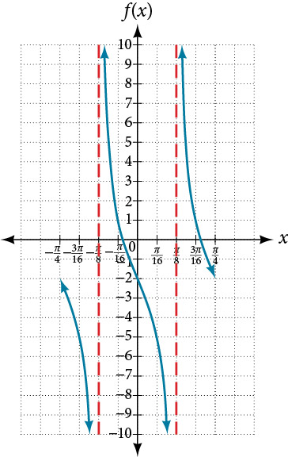
For the following exercises, graph two full periods. Identify the period, the phase shift, the amplitude, and asymptotes.
Solution
amplitude: none; period: no phase shift; asymptotes: where is an odd integer
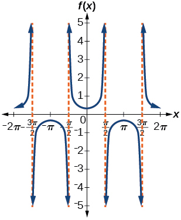
Solution
amplitude: none; period: no phase shift; asymptotes: where is an integer
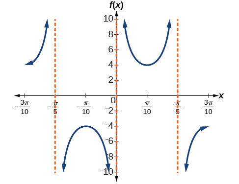
Solution
amplitude: none; period: no phase shift; asymptotes: where is an integer
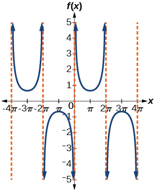
For the following exercises, use this scenario: The population of a city has risen and fallen over a 20-year interval. Its population may be modeled by the following function: where the domain is the years since 1980 and the range is the population of the city.
What is the largest and smallest population the city may have?
Solution
largest: 20,000; smallest: 4,000
Graph the function on the domain of .
What are the amplitude, period, and phase shift for the function?
Solution
amplitude: 8,000; period: 10; phase shift: 0
Over this domain, when does the population reach 18,000? 13,000?
What is the predicted population in 2007? 2010?
Solution
In 2007, the predicted population is 4,413. In 2010, the population will be 11,924.
For the following exercises, suppose a weight is attached to a spring and bobs up and down, exhibiting symmetry.
Suppose the graph of the displacement function is shown in Figure 13, where the values on the x-axis represent the time in seconds and the y-axis represents the displacement in inches. Give the equation that models the vertical displacement of the weight on the spring.
![A graph of a consine function over one period. Graphed on the domain of [0,10]. Range is [-5,5].](../../media/CNX_Precalc_Figure_06_03_225.jpg)
At time = 0, what is the displacement of the weight?
Solution
5 in.
At what time does the displacement from the equilibrium point equal zero?
What is the time required for the weight to return to its initial height of 5 inches? In other words, what is the period for the displacement function?
Solution
10 seconds
Inverse Trigonometric Functions
For the following exercises, find the exact value without the aid of a calculator.
Solution
Solution
Solution
Solution
No solution
Solution
Graph and on the interval and explain any observations.
Solution
The graphs are not symmetrical with respect to the line They are symmetrical with respect to the -axis.
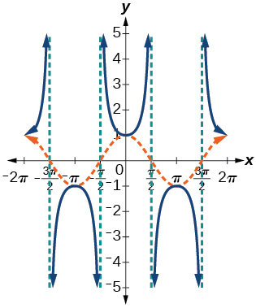
Graph and and explain any observations.
Graph the function on the interval and compare the graph to the graph of on the same interval. Describe any observations.
Solution
The graphs appear to be identical.
![Two graphs of two identical functions on the interval [-1 to 1]. Both graphs appear sinusoidal.](../../media/CNX_Precalc_Figure_06_03_228.jpg)
Chapter Practice Test
For the following exercises, sketch the graph of each function for two full periods. Determine the amplitude, the period, and the equation for the midline.
Solution
amplitude: 0.5; period: midline
![A graph of two periods of a sinusoidal function, graphed over -2pi to 2pi. The range is [-0.5,0.5]. X-intercepts at multiples of pi.](../../media/CNX_Precalc_Figure_06_03_229.jpg)
Solution
amplitude: 5; period: midline:
![Two periods of a sine function, graphed over -2pi to 2pi. The range is [-5,5], amplitude of 5, period of 2pi.](../../media/CNX_Precalc_Figure_06_03_231.jpg)
Solution
amplitude: 1; period: midline:
![A graph of two periods of a cosine function, graphed over -7pi/3 to 5pi/3. Range is [0,2], Period is 2pi, amplitude is1.](../../media/CNX_Precalc_Figure_06_03_233.jpg)
Solution
amplitude: 3; period: midline:
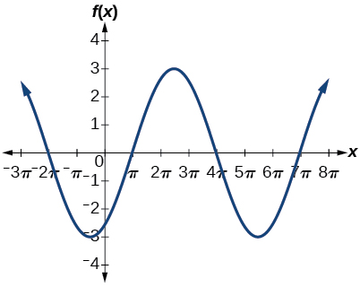
Solution
amplitude: none; period: midline: asymptotes: where is an integer
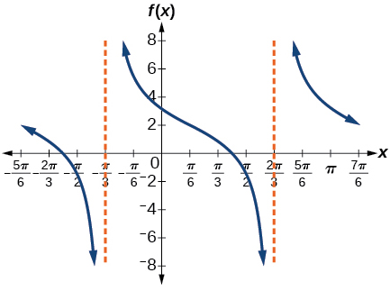
Solution
amplitude: none; period: midline: asymptotes: where is an integer

Solution
amplitude: none; period: midline:

For the following exercises, determine the amplitude, period, and midline of the graph, and then find a formula for the function.
Give in terms of a sine function.
![A graph of two periods of a sine function, graphed from -2 to 2. Range is [-6,-2], period is 2, and amplitude is 2.](../../media/CNX_Precalc_Figure_06_03_242.jpg)
Give in terms of a sine function.
![A graph of two periods of a sine function, graphed over -2 to 2. Range is [-2,2], period is 2, and amplitude is 2.](../../media/CNX_Precalc_Figure_06_03_243.jpg)
Solution
amplitude: 2; period: 2; midline:
Give in terms of a tangent function.

For the following exercises, find the amplitude, period, phase shift, and midline.
Solution
amplitude: 1; period: 12; phase shift: midline
The outside temperature over the course of a day can be modeled as a sinusoidal function. Suppose you know the temperature is 68°F at midnight and the high and low temperatures during the day are 80°F and 56°F, respectively. Assuming is the number of hours since midnight, find a function for the temperature, in terms of
Solution
Water is pumped into a storage bin and empties according to a periodic rate. The depth of the water is 3 feet at its lowest at 2:00 a.m. and 71 feet at its highest, which occurs every 5 hours. Write a cosine function that models the depth of the water as a function of time, and then graph the function for one period.
For the following exercises, find the period and horizontal shift of each function.
Solution
period: horizontal shift:
Write the equation for the graph in Figure 14 in terms of the secant function and give the period and phase shift.

Solution
period: 2; phase shift: 0
If find
If find
Solution
For the following exercises, graph the functions on the specified window and answer the questions.
Graph on the viewing window by Approximate the graph’s period.
Graph on the following domains in and Suppose this function models sound waves. Why would these views look so different?
Solution
The views are different because the period of the wave is Over a bigger domain, there will be more cycles of the graph.
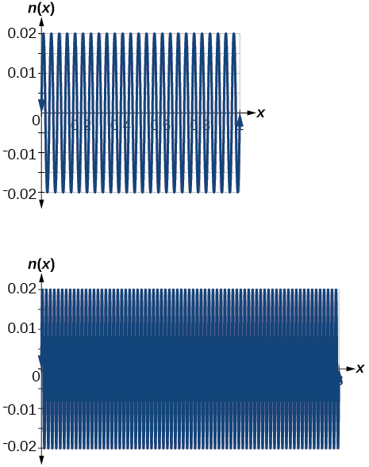
Graph on and explain any observations.
For the following exercises, let
What is the largest possible value for
Solution
What is the smallest possible value for
Where is the function increasing on the interval
Solution
On the approximate intervals
For the following exercises, find and graph one period of the periodic function with the given amplitude, period, and phase shift.
Sine curve with amplitude 3, period and phase shift
Cosine curve with amplitude 2, period and phase shift
Solution
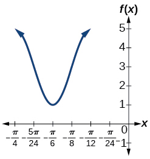
For the following exercises, graph the function. Describe the graph and, wherever applicable, any periodic behavior, amplitude, asymptotes, or undefined points.
Solution
This graph is periodic with a period of

For the following exercises, find the exact value.
Solution
Solution
Solution
Solution
For the following exercises, suppose Evaluate the following expressions.
Solution
Given Figure 15, find the measure of angle to three decimal places. Answer in radians.
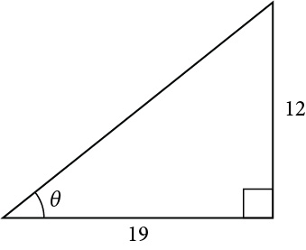
For the following exercises, determine whether the equation is true or false.
Solution
False
The grade of a road is 7%. This means that for every horizontal distance of 100 feet on the road, the vertical rise is 7 feet. Find the angle the road makes with the horizontal in radians.
Solution
approximately 0.07 radians